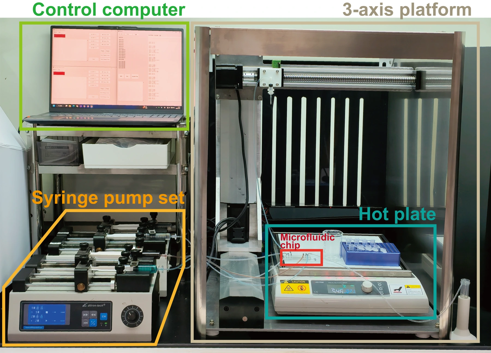

RESEARCH / 01
Microfluidic Systems and Automation
Control the environment.
Microfluidic systems that regulate transport and reactions, and integrate liquid handling with diagnostic workflows.

RESEARCH STUDY / R01
Programmable microfluidic synthesis
A microfluidic ammonia-manipulation platform for continuous synthesis of morphology-tunable metal–organic frameworks.
My contribution
Platform development and control of microfluidic reaction environments.

Related publications
RESEARCH STUDY / R02
Integrated point-of-care diagnostics
Two complementary studies: portable multiplexed qPCR for HPV genotyping, and pneumatic liquid manipulation for quantitative liver-function monitoring.
My contribution
Experimental investigation, analysis and device-workflow work; the qPCR and pneumatic studies retain their separate evidence.

Molecular diagnostics
Portable, automated multiplexed qPCR for discrimination of fifteen HPV genotypes.
Pneumatic diagnostics
Parallel liquid manipulation for equipment-free, quantitative multiplexed liver-function monitoring.